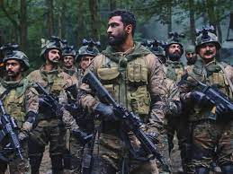
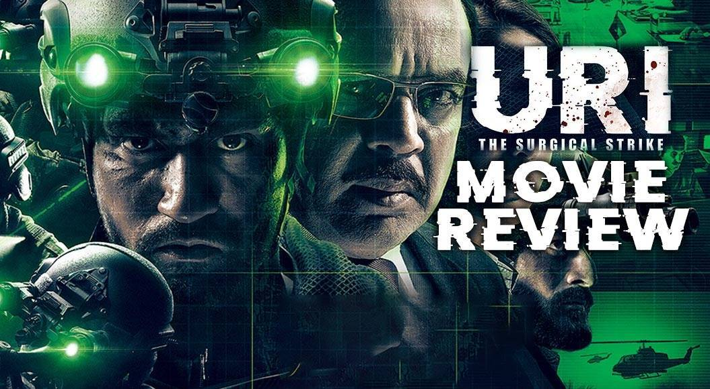

Uri: The Surgical Strike
On the night of 28 September, the commandos leave for the strike in Pakistan occupied Kashmir in Mi-17 helicopters. During the mission,Vihaan's helicopter is forced not to cross the Line of Control due to the latest intelligence from spies in Pakistan that the Pakistani Army has deployed an "AWAC" early warning radar-based surface to air missile system in Muzaffarabad sector to bring their helicopter down. He and his team improvise by going on foot through a cave (which was very risky due to darkness and the unknown presence of other terrorists). His team successfully infiltrate and kill all the terrorists on the two launchpads. Similarly, other commando teams also manage to kill all of the terrorists. Vihaan kills Idris and Jabbar, who are the perpetrators of the Uri attack. The local police are alerted, and the commandos who are low on ammunition and time escape. On their way back, they are heavily rained down upon by gunfire from both a nearby machine gun bunker and a Pakistani Air Force Mi-17 Helicopter, which was scrambled to intercept Vihaan's team. Flight Lieutenant Seerat comes to their rescue by firing back at the Pakistani gunship, thus driving it away and eliminating the machine gun bunker. His team successfully crosses the LoC on the Indian side with no casualties. The rest of the assigned teams are also successful and are back with no casualties. Vihaan lands at Hindon Air Force Station at Ghaziabad, Uttar Pradesh. The film ends with him, Pallavi, Govind, and the commandos happily having a formal dinner with the Prime Minister.
In a post-credits scene, Zameer, a Pakistani minister, wakes up and shouts in frustration while seeing the news of India's successful surgical strike. The scene cuts to a title card reading "Jai Hind".

